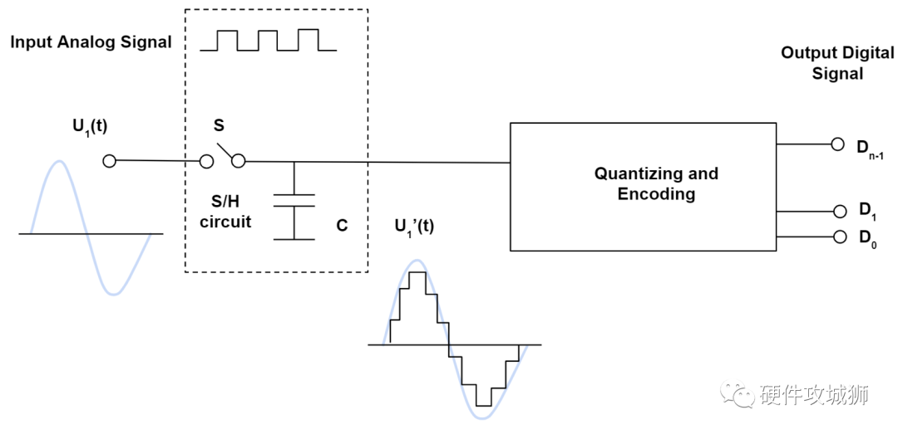

数字信号和模拟信号
模拟信号（Analog signal）简称 A
模拟信号是连续的信号，如下图中红色的曲线
优点
- 更容易处理
- 最适合音频和视频传输
- 具有更高的密度，可以传输更精细的信息
- 需要的带宽比数字信号少
- 可以准确的表达物理现象的变化
- 电气容差敏感度较低
缺点
- 长距离传输可能会产生意外干扰信号
- 容易产生耗损
- 数字信号抗扰性更高，模拟信号更容易受到噪声和失真的影响
- 信号质量较低
数字信号（Digital signal）简称 D
数字信号是离散的信号，如下图中黑色的阶梯型曲线
优点
- 能以更小的噪声，失真和干扰传递信息
- 数字电路能以较低的成本更容易大量复制
- 数字信号处理更加灵活，因为通过数字可编程系统可以改动DSP的操作
- 数字信号处理更加安全，数字信号可以被轻易加密和压缩
- 数字系统更加精确，而且通过错误检测和矫正代码可以降低错误发生的几率
- 数字信号可以通过半导体芯片存储在任何磁性介质或者光学介质上
- 数字信号可以远距离传输
缺点
- 与传输相同信息的模拟信号相比，数字通信需要更高的带宽
- DSP以更高的速率处理信号，而且包含更多上层内部硬件资源，这将导致更高的功耗，而模拟信号处理因为包含消耗更少能量的无源组件，所以功耗相对较低
- 数数字系统和处理通常更为复杂

为什么要进行数模转换呢
-
模拟信号转数字信号：ADC
因为需要使用计算机对数据进行各种计算来处理成矩阵图像，而模拟信号是无法被计算机处理的。计算机只能处理离散的具体数据，而模拟数据是连续的，是不具体的，故而无法对模拟信号进行处理。计算机的时间不是连续的，是有最小的时钟信号的
过程

如图，输入为模拟信号，通过采样保持电路（S/H）对其进行处理，创建该信号的近似数字表示，信号幅度不再是无限，而是根据ADC分辨率量化成的离散值，具有较高分辨率的ADC将具有更精细的步长，并且能更准确的表达输入模拟信号，ADC的最后一级将数字化信号编码为代表模拟信号幅度的二进制比特流
-
数字信号转模拟信号：DAC
对于一些设备的控制，不可能只用数字信号就能控制的了的，所以需要一些手段来进行连续的控制，例如电机的控制，电机是通过控制电流或者电压来控制的，但是电流和电压是连续的模拟信号，所以就需要数字信号转化为模拟信号，常使用保持器来保证控制的连续性
过程

DAC提供反向操作，DAC的输入是来自数字系统的二进制数据流，它输出的离散值可近似为模拟信号，DAC分辨率越高，输出信号也会更加接近真实的，平滑连续的模拟信号，在模拟信号链中经常还有一个后置滤波器，用于进一步平滑波形